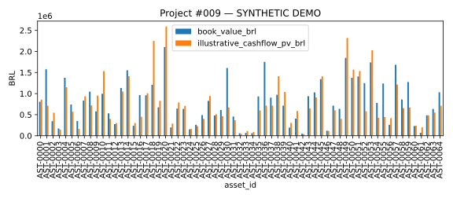

ANÁLISE DE DADOS / PROJETO #009
Project #009 — Avaliação de Ativos Industriais e Imobilizado (CAPEX)
DADOS 100% SINTÉTICOS. Métricas produzidas por código efetivamente executado. Sem dado SAP real, sem impacto industrial observado e sem relatório Power BI homologado.
Visualização calculada

Métricas reproduzíveis
| dataset | synthetic / reproducible, not operational evidence |
|---|---|
| project | 9 |
| assets | 65 |
| gross_book_cost_brl | 87742811.48 |
| depreciated_book_value_brl | 51873745.34 |
| illustrative_future_cashflow_pv_brl | 48197708.91 |
| interpretation | Discounted illustrative net cashflows exclude purchase price as sunk cost; NOT external market valuation. |
Reprodutibilidade
As tabelas são um resumo estático das métricas calculadas. Não afirmamos conectividade com SAP, Power BI ou operação produtiva.